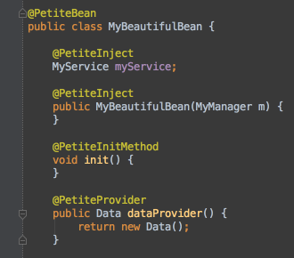
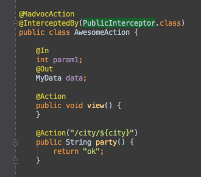
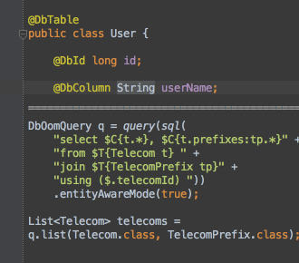
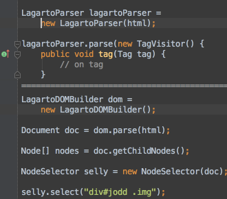
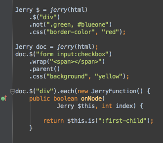
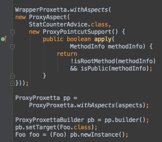
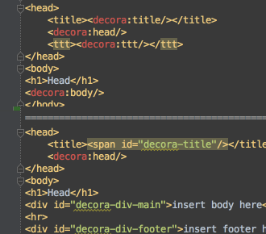
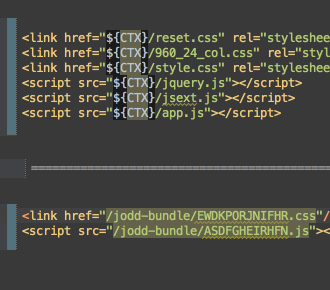
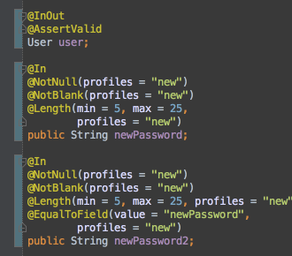

-

Petite
Petite IoC container binds your components in loose-coupled architecture. Using few annotations, or manually, you can wire beans with ease. Petite is lightweight, fast and still powerful enough to help you build whatever you imagined.
-

Madvoc
Madvoc is heavy-duty web framework. Using pragmatic conventions, writing presentation layer becomes a simpler task. Packed with many features, this light and fast web layer speeds up the development of web actions.
-

DbOom
Brings back joy and simplicity of native database programming! If you just need more robust JDBC access, or powerful object-entity mapping, DbOom will help. Speed up your development, don't write simple queries and use template-sql extension.
-

Lagarto
Welcome to fastest HTML parser! Lagarto core uses visitor pattern to parse (X)HTML and XML content. On top of it, try Lagarto DOM builder, for more convenient approach. And finally, with help of CSSelly, select nodes using CSS 3 selectors.
-

Jerry
Enjoy jQuery syntax in Java! Parse HTML content and use elegant interface that mirrors jQuery API that you are already used to.
-

Proxetta
Proxetta creates dynamic proxies in run-time. What is unique is how pointcuts and advices are defined. Moreover, there are three different flavors: proxy, wrapper and invoker replacer, an another unique feature.
-

Decora
Decora is web decoration framework to help in creating sites consisting of pages based on templates. This gives a consistent look-and-feel, navigation and layout scheme. Use Decora with taglib tags, or just with native HTML!
-

HtmlStapler
HtmlStapler transparently packages web resources included by your HTML pages: javascripts and CSS files. This significantly speeds up webpage load time and page response as instead of loading many resource files, only one or two bundles will load.
-

VTor
VTor is a pragmatic validation framework for any kind of Java objects. Fast, small and focused on validation. Constraints can be declared with annotations or manually, grouped in profiles.
1.7 MB
Jodd
The Unbearable Lightness of Java
Jodd is set of open-source Java tools and micro-frameworks; compact, yet powerful.